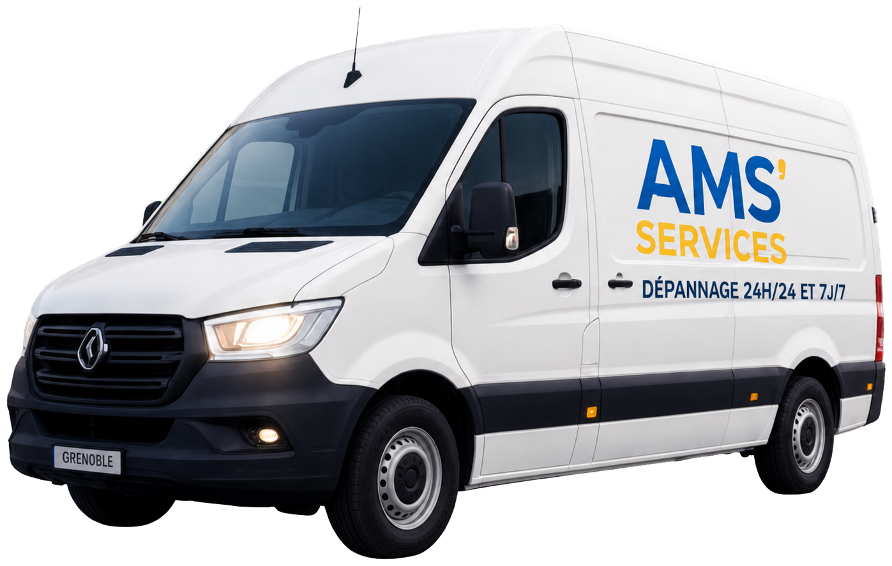
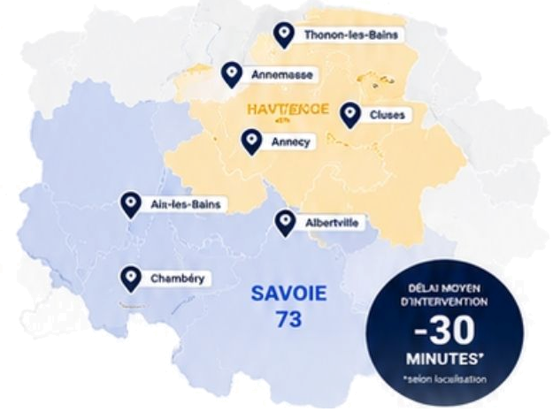

Plomberie, électricité, serrurerie ou volets roulants, AMS'SERVICES intervient en moins de 30 minutes, 24h/24 et 7j/7, partout en Savoie et en Haute-Savoie.

Une fuite d'eau, une panne électrique, une porte claquée ou un volet roulant bloqué ? Un seul numéro suffit pour joindre rapidement AMS'SERVICES. Disponibles 24h/24 et 7j/7, nous intervenons en urgence à Chambéry, Aix-les-Bains et dans toute la Savoie et la Haute-Savoie pour tous vos dépannages. Un appel, une prise en charge rapide et une intervention adaptée à votre situation.
Intervention en pleine nuit pour une fuite d'eau importante. Technicien très pro, arrivé en 20 min. Service impeccable !
Volet roulant bloqué depuis le matin, réglé en moins d'une heure. Professionnalisme et efficacité !
Porte claquée un dimanche, serrurier rapidement sur place. Très satisfait du service et du tarif.
Appelez-nous maintenant, nous sommes disponibles 24h/24 et 7j/7.
Nous intervenons rapidement dans toutes les communes et alentours.

Un seul numéro à mémoriser pour toutes vos urgences 24h/24 et 7j/7.
📞 07 67 91 51 32Technicien chez vous en moins de 30 minutes*
Week-end, nuit, jours fériés
Devis clair avant chaque intervention
Professionnels formés et assurés
Nous intervenons sur toutes les marques
Pièces fiables et durables
Un service de qualité au juste prix
CB acceptée
AMS Services intervient pour tous vos dépannages d'urgence en plomberie, serrurerie, électricité et volets roulants dans toute la Savoie (73) et la Haute-Savoie (74). Nos équipes assurent des interventions rapides à Chambéry, Aix-les-Bains, Annecy, Annemasse, Albertville, Rumilly, Thonon-les-Bains, Cluses, Sallanches, Bonneville ainsi que dans les communes environnantes. Disponibles 24h/24 et 7j/7, nous prenons en charge les urgences telles que les fuites d'eau, ouvertures de portes, pannes électriques, volets roulants bloqués, chauffe-eau en panne, canalisations bouchées ou serrures cassées. Faites appel à des techniciens qualifiés, réactifs et transparents pour une intervention efficace et au juste prix.